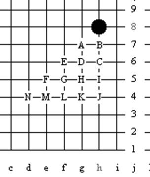
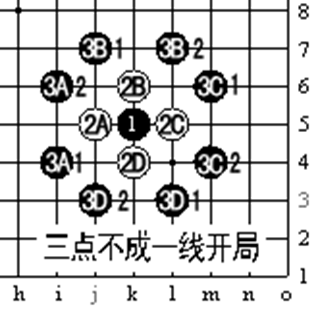
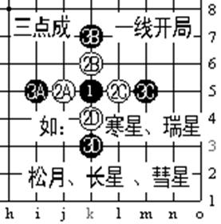

那氏五子棋规则
#1 那氏五子棋规则 作者：有志青年 发表时间：2008-7-21 9:10:51
原文地址：http://www.rifchina.com/Article/ShowArticle.asp?ArticleID=4971
为什么天元点必须是黑？为什么第一手必须落于天元呢？这是《中国五子棋竞赛规则》现行的RIF规则规定的啊。这个问题看起来很幼稚，但它给了我们一个意想不到的启示，现行规则在众多中国五子棋痴迷研究者“终结”下，定式越来越大，可下的局面越来越少，黑优的局面已无法抵御。对于高手来说无论是国际国内都在大声疾呼“修改规则”！新方案一个接一个出炉，RIF更是迫不急待“矬子里面拔将军”决议试行。然而我们认真看一下三十多种新规则方案，不外乎在多交换、多打点上做文章。这样也许削弱黑棋优势，但由于多交换多打点，使广大初学者很难理解，必将使连珠五子棋脱离群众，丧失生命力。
限制新规则方案的思路其实就是“第一手天元点”的问题，想当初日本将中国五子棋在规则上加以限制，使之成为竞技连珠，现在我们为何不能“放”一下解放连珠呢？
这里我们提出对现行规则稍加改动的“那氏五子棋竞赛规则”—只是解放“天元”，也就是说第一手可以不落天元，黑指定开局、三手交换、五手两打、黑棋有禁手都不变；白指定第一手黑的位置，但如果白将黑第一手指在太接近边角，黑将无法行棋，因此加以规定：“第一手的位置只能在四个星位所形成的矩形空间内”。
初步分析“那氏规则”的优点：
1、对于现行规则从描述主体变化不大。有人会问为何局限26种开局而不再放开二、三手呢？因为如果放开 ，就等于背离了五子棋短兵相接的特性。
2、将现行规则“天元”点的变化做为一个分支完整保留。
3、白指定黑第一手，看图除去对称点，可选择的点有15点，克服了假黑方对于某一开局赛前准备的可能。

4、变化成倍增加，由于不在天元，白2相对于黑1 的不同位置的开局变化也就不同，21×8+5（三点一线）×4=188，也就是说对于指定的黑1 点的位置有188种开局的变化，对于天元点26种开局增加变化[(188-26)/26]=623%。各点总的变化量增加[(188×14-26)/26]=10023%。

5、增加了技术要求，原规则在天元发展方向是对称的，那氏规则为了实现提高子力的效率就要求你提高拓展的能力。
6、那氏规则更有利于高手的发挥，特别是在还没有形成定式之时，对棋形的理解及计算力都是高手的用武之地。
一面之词请大家探讨。
#2 Re:那氏五子棋规则 作者：Lirf 发表时间：2008-7-21 22:03:27
就内容而言,这东西好象都没有驳斥的必要了……
可一个更大的疑问是，这东西是那威写的吗?
有禁里怎么总有人搞这种丑陋的事情?
#3 Re:那氏五子棋规则 作者：我把自己丢拉 发表时间：2008-7-23 9:31:13
我来看看,我啥也不说.
#4 Re:那氏五子棋规则 作者：青柳立夏 发表时间：2008-7-31 10:44:57
不下天元确实变化大了#5 Re:那氏五子棋规则 作者：wrwak 发表时间：2008-11-4 22:13:32
我支持这个规则 棋谱只是研究 万一时候防身#6 Re:那氏五子棋规则 作者：游戏人间 发表时间：2008-11-5 11:11:14
其实整体还不错的。。但是有个致命的弊端。假后方优势太巨大了。对于精通26开局的人来说指定到边角肯定后手方优势巨大。#7 Re:那氏五子棋规则 作者：兔子哥哥 发表时间：2008-11-5 22:25:08
1、对于现行规则从描述主体变化不大。有人会问为何局限26种开局而不再放开二、三手呢？因为如果放开 ，就等于背离了五子棋短兵相接的特性。
背离了五子棋短兵相接的特性。？不明白那氏规则为什么会说这样一句没头脑的话？
五子棋确实是一种短兵相接的棋种 ，就算你开始不限制2.3手，难道还有对手你走H8，我走A1吗，呵呵这样一句话简直是开玩笑，什么叫做背离短兵相接呢？除非对手想输，否则，就算他计算力再强，他也不敢走太远，所以我认为这样一句话是废话，你以为下围棋呢，你不规定大家就布星布局呀？简直是变相的扼杀妖刀开局！
［ 失落刀 于 2009-1-3 20:13:19 时奖励此帖[金币加 20 威望加1］
#8 Re:那氏五子棋规则 作者：walker 发表时间：2008-12-18 22:41:25
回 6楼，把白方也搞成有禁 如何？
#9 Re:那氏五子棋规则 作者：失落刀 发表时间：2009-1-3 20:18:37
引用楼主
“4、变化成倍增加，由于不在天元，白2相对于黑1 的不同位置的开局变化也就不同，21×8+5（三点一线）×4=188，也就是说对于指定的黑1 点的位置有188种开局的变化，对于天元点26种开局增加变化[(188-26)/26]=623%。各点总的变化量增加[(188×14-26)/26]=10023%。”
这个存疑。
另外黑3如果开放到黑1为中心7*7范围内，更看好该规则，所谓那氏52规则吧。
#10 Re:那氏五子棋规则 作者：失落刀 发表时间：2009-2-21 16:09:50
山口规则：1、第一位棋手下前三手棋（RIF标准规则规定的26种开局之一），同时提议五手打点的数目；
2、第二位棋手决定是交换还是保持执白；
3、下第5手时，黑方必须提供第一位棋手在开局时所提议的数目的五手打点；
4、白方从中选择一点，并下第6手棋；
5、按RIF标准规则继续（黑棋有禁手）。
#11 Re:那氏五子棋规则 作者：失落刀 发表时间：2009-2-21 16:11:20
1.黑棋第一手（元点）的可在棋盘上D4-D12-L12-L4所形成的矩形区域内选择任意一点，具体位置由假黑白双方确定：设棋盘上任意一个星位的坐标是（1，1），天元坐标是（5，5）。假黑白双方各任意抓五个以内（包括五个）相应黑白子，黑子数确定从任一星位开始元点的横坐标，白子数确定黑选定的星位元点的纵坐标。
2.黑指定开局（现规则26种）。
3.三手交换（如现规则）。
4.五手两打（如现规则）。
5.黑棋有禁手（如现规则）。